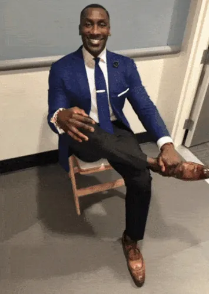

Daniel has started working at Hot Beans Web in 2024 after finishing a Level 3 Web Development course and he focuses on React and making websites easy for everyone to use and he recently led a project to rebuild the product pages for a big online shopping website.
Perrel has studied Computer Science in university before joining the trainee program and he works with Node.js and PostgreSQL and has helped build the company's internal content management system used for client projects.

Darrell joined Hot Beans after completing a coding bootcamp and he enjoyed working on both the front end and back end of applications and he is currently creating a live chat feature for a software-as-a-service client using TypeScript and WebSockets.
James joined the trainee program in his first year after finishing a T Level in Digital Production and he has quickly learned HTML, CSS and JavaScript and is now starting to learn React.
Sarah combines design and coding skills from her UX web development course and she created new features ideas in Figma first then builds them into real websites using Tailwind CSS.
Linh used to work in graphic design and has now moved into web development and she has a strong eye for detail which helps his work and he is currently learning Vue.js as part of his training.